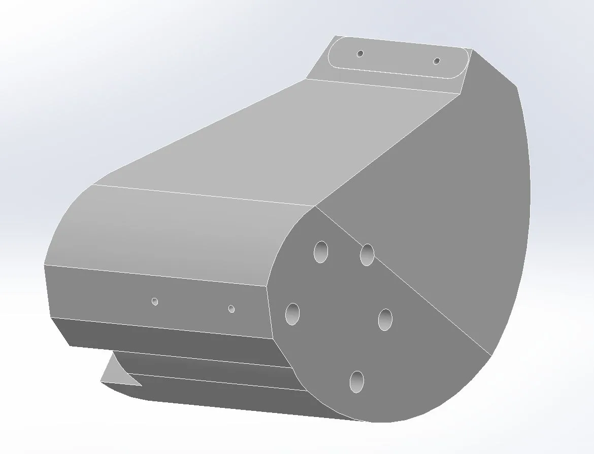
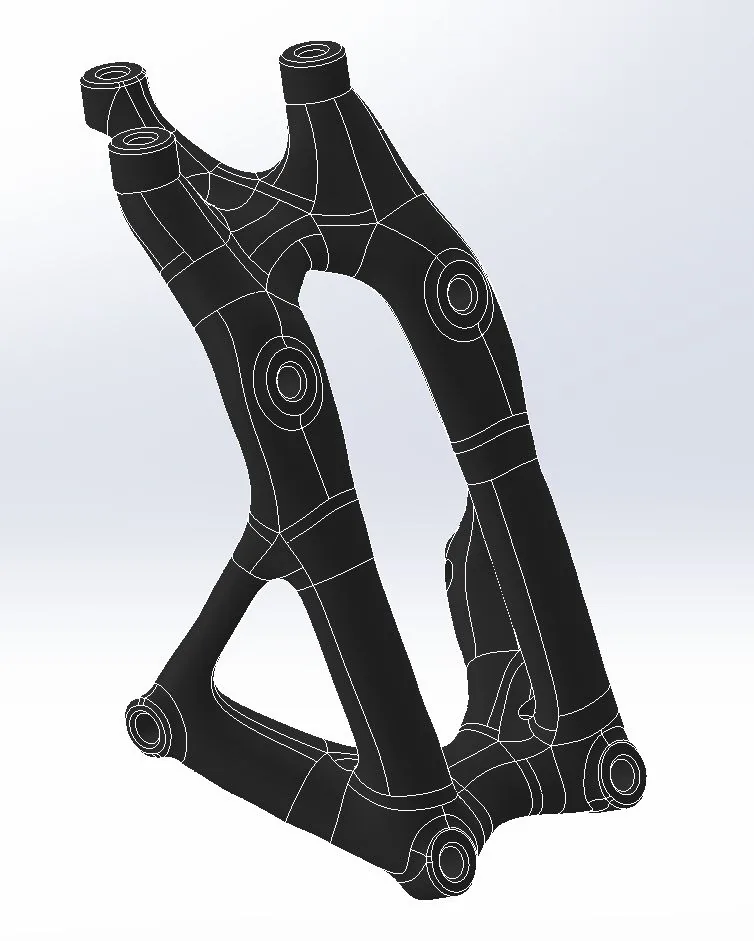
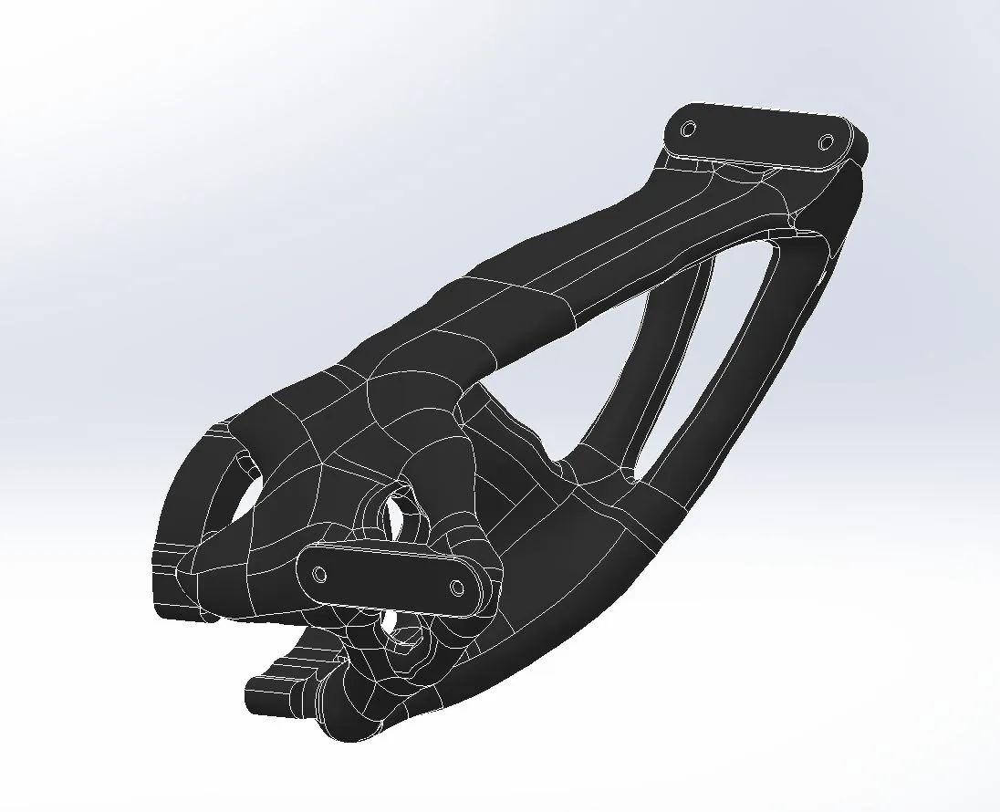
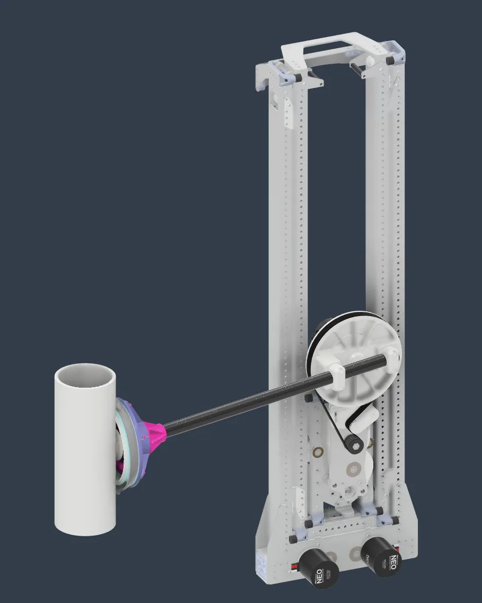
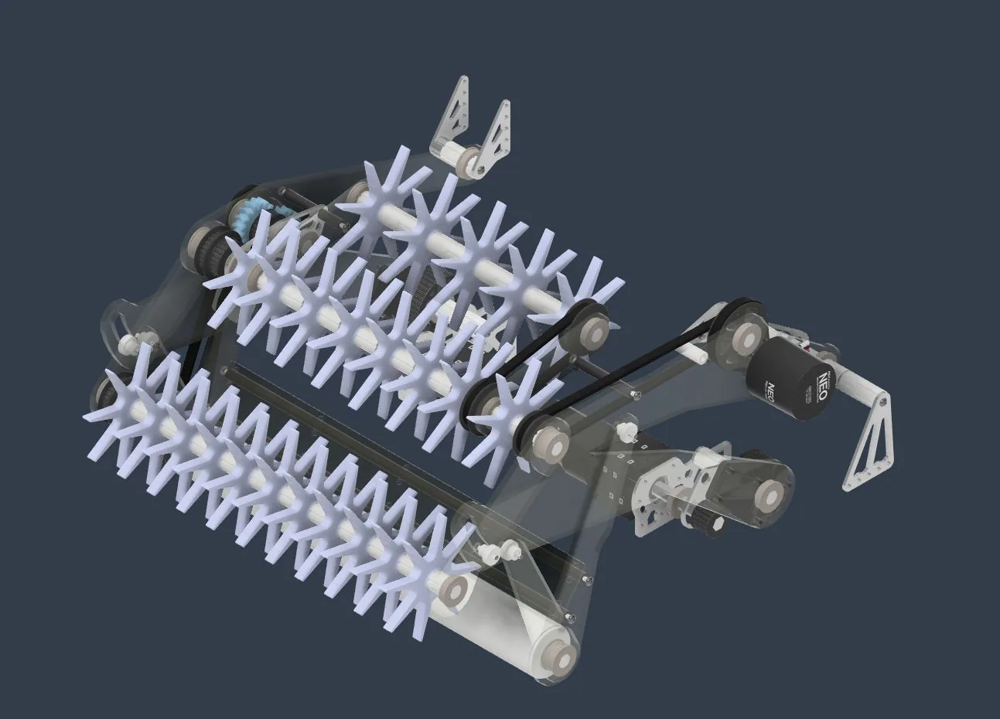
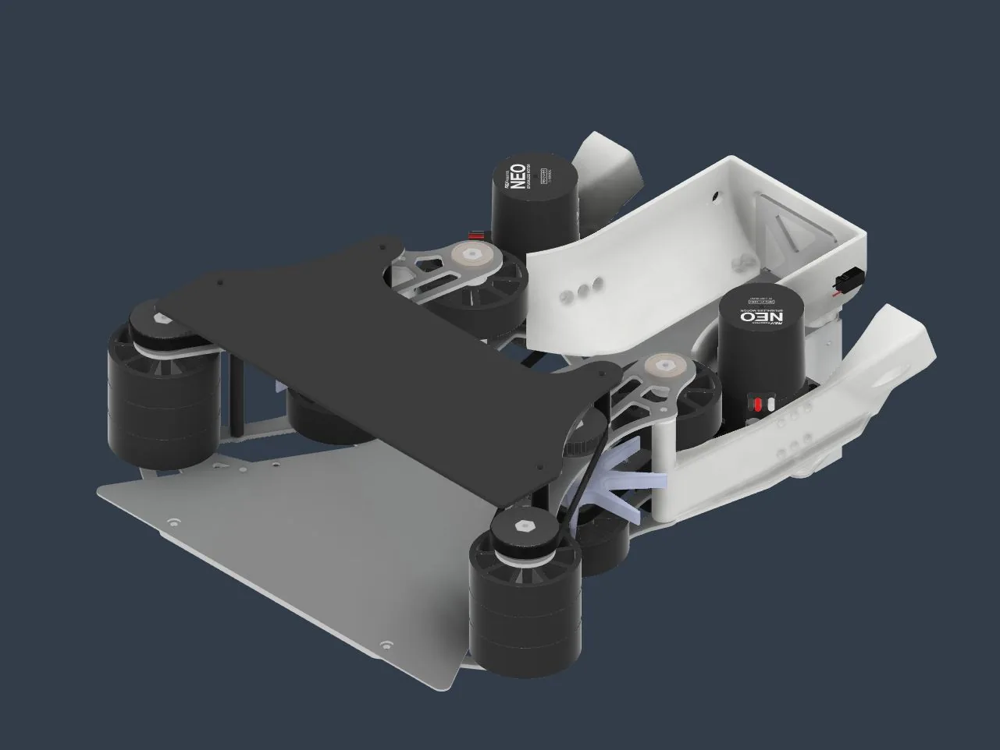

From high-temperature additive manufacturing to competition robotics: every project is a cycle of research, design, fabrication, and proof.
01
Independent project · Additive manufacturing
High-temp 3D printer
Several years of rebuilding and iteration turned a custom printer into a dependable high-temperature machine.
Its 70°C chamber enables strong ABS and ASA parts with superior layer adhesion. The process combined mechanical design, simulation, control tuning, and resonance analysis.
Fusion 360 CAD + FEA
ANSYS + SimScale CFD
Klipper configuration
Thermodynamics
Soldering
Resonance analysis
Previous versions
V1V1 — External ChamberV2
Working prototype / KlipperScreen UI
Independent project · Materials research
PID annealing oven
Problem
Make polymer annealing repeatable enough to optimize strength and heat-deflection temperature—and practical enough to become a product.
Process
Retrofit a convection oven with 3D-printer electronics, install Klipper, tune the controller, and build an intuitive KlipperScreen interface.
Result
Characterized PPS-CF and PET-CF across annealing temperatures and identified sulfur dioxide deposits in high-temperature PPS-CF samples.
UW Advanced Robotics · Engineer Squad
Topology optimization
11×increase in stiffness-to-weight ratio
Problem
Robot mass was at a premium. Save weight without surrendering stiffness.
Process
Build rough geometry in SolidWorks, create an nTop optimization notebook, run topology optimization, then export and clean the result in SolidWorks.

01 Design space

02 Optimize

03 Refine
FRC Team 2811 · Stormbots
Competition robotics.
Mechanical Design & Build Lead. Rapid prototyping under strict dimensional, performance, and schedule constraints.
05 iterations
Reefscape climber
Climb a metal cage using only its poles or bottom. Prototyped in wood and metal, then designed in Fusion 360.
Outcome Consistent, easy climbing.
03 iterations
Crescendo climber
Reach a 27-inch chain from below a 24-inch starting height while preserving access to the high goal.
Outcome Ranked 17th of 3,477 worldwide for climbing performance. The robot earned one first-place and two second-place event finishes.
04 iterations
Crescendo intake
Pick up foam rings from either direction. Wheel and roller prototypes led to a compact Fusion 360 design.
Outcome Jam-free, high-throughput acquisition with a climb-scoring mechanism. The robot earned one first-place and two second-place event finishes.
Lead designer · Builder · Driver
First swerve base
Designed for Charged Up to be built as quickly and economically as possible.
Outcome Won its first and only event.
02 iterations
Charged Up roller claw
Acquire cones and inflatable cubes from both the floor and a shelf with one mechanism.
Outcome Reliable pneumatic claw mounted to a pivoting wrist. The robot earned a second-place event finish.
02 iterations
Rapid React passthrough
Transfer 24 cm balls from two sources, stage them for the shooter, and keep the assembly very light.
Outcome Reliable acquisition from both sides.
Offseason FRC Team 9999 · SK Robotics
One robot. Three systems.
Mechanical design for fast, precise handling of PVC “coral” from arbitrary ground orientations to repeatable scoring positions.
01

Elevator
Dual-motor drive with an internally routed HTD5 belt and continuous rigging for four scoring heights.
02

Intake
Fast acquisition from any orientation, with a fold-away response if the mechanism collides.
03

Passthrough
Independent sides detect and clear jams; a 3D-printed carrier locks coral into a repeatable position.
From screen to shop floorIntegrated SK Robotics mechanisms in the completed robot, which won two events.
Side projects
Always building.
Smaller projects are where new tools, processes, and constraints become practical skills.